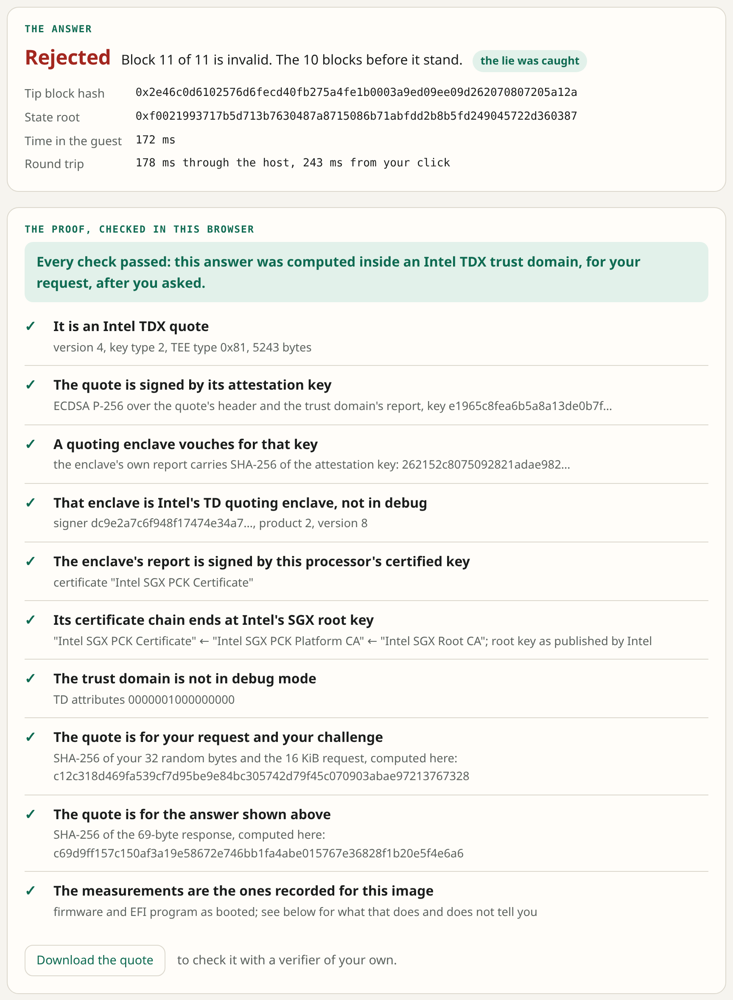

Lean all the way down, inside a TEE.
cluck is an operating system written in Lean 4 that boots in an AWS Nitro Enclave or an Intel TDX trust domain with no Linux and no C library under it. A service on it is a function from bytes to bytes. Everything that reads a byte from outside the machine is Lean, and what the machine answers comes back with an attestation you can check.
What is in the machine, and what language it is in
The usual confidential VM is a Linux distribution with your program somewhere on top, and its attestation measures all of it. Here the measured image is small enough to read: a service, the drivers and network stack it needs, and a Lean runtime cut down to what compiled Lean actually calls. C and assembly exist only underneath, and never interpret bytes that came from outside.
ping, random,
selftest and an attestation over a nonce.A real enclave, verified off-host
The image CI built ran in a Nitro Enclave, not in debug mode. Its attestation document verified on another machine against the AWS root, with the measurements CI reproduced from source.
An EFI program on its own IP stack
Booted on Intel hardware under KVM. Concurrent TCP streams, IPv6, fragmented UDP and DNS were exercised against it, and the host's quoting service turned its report into a quote that Intel's DCAP library accepted.
The guest cannot be broken the way the host can
The enclave and the machine beside it share no kernel, no C library and no parser. One flaw is not enough to take both. The threat model says where that holds and where it does not.
An answer tied to the machine that gave it
A request can carry 32 bytes of the asker's choosing. The response then comes with a TDX
report whose REPORTDATA is SHA-256(challenge ‖ request) ‖ SHA-256(response),
and the host's quoting service signs that into a quote. Whoever checks the quote learns that a trust
domain with those measurements gave this response to this request, after the challenge was chosen.
The repository has a page that does the checking in the browser: Intel's signatures from the quote up to Intel's SGX root key, the signer of the quoting enclave, the debug attribute, and the two hashes computed locally. The server it talks to is treated as the adversary it is.

evm/demo/. A chain whose last block claims a state root that
executing it does not give was sent to the guest. It rejected the block, and the rejection itself is
what the quote covers.Ethereum blocks as the service: checked, and now built
The service in evm/ is Jaune, an
executable specification of the EVM written in Lean by someone else, for proofs. Linked against this
runtime it becomes a machine that takes blocks, re-executes every transaction, and refuses a block
unless the state root comes out as its header claims. The aim is a block builder: the one piece of
Ethereum's block market that is run in trust domains today, there on a Linux virtual machine, here
with no Linux under it.
Running today, in TDX
Five chains from Ethereum's own test suite, each with its whole starting state in the request. Every answer is the fixture's tip hash and state root, byte for byte, as a process on Lean's runtime, as a process on the minimal runtime, and as a TDX guest.
| Test chain | Blocks | Gas | In the TDX guest |
|---|---|---|---|
| highGasUsage | 11 | 0.23M | 20 ms |
| DelegateCallSpam | 1 | 8M | 600 ms |
| walletReorganizeOwners | 259 | 38M | 3.1 s |
| ShanghaiLove | 1 | 4.5M | 110 ms |
Blocks of the real chain, in the guest
Mainnet's state cannot be sent whole, so a request carries a witness instead: the trie nodes on the paths to what the block touches. The guest checks them against the parent's state root, executes, and recomputes the root. Anything the block read that the witness did not prove is answered with "no verdict", never with a guess. (That sentence was wrong until 21 November 2026: a contract's call to an account the witness left out went unnoticed, and a valid block could be answered invalid. It was found when the node refused a block the guest had built, and it is closed and tested on real blocks now.)
On 20 November 2026, 100 consecutive mainnet blocks (26458315 to 26458414, up to 625 transactions and 60M gas, requests of 2 to 22 MB) were put to the TDX guest, each with a witness from a reth node. All 100 came back valid with the block hash and state root the node reports. The first time through, a block took 10.8 seconds at the median. After a day of rewrites (one step of the pairing check that zero-knowledge proofs use, the recovery of senders from signatures, the check of jump destinations, the reading of witnesses, and an interpreter that copied all of a contract's memory at every write to it) it takes 3.0, between 0.4 and 19. A relay needs about 3.
Building blocks: one is on mainnet
Since 21 November 2026 the guest also builds. Each slot, a program on the host hands it the transactions pending in public and proofs of the state they touch. The guest orders them by what they pay the proposer, runs them, throws out any that read something the proofs do not cover, and answers with a block header and a bid for it, signed with a key it drew when it started and that never leaves it. It is told how long it has, and ends the block with what is in it when that is up. Each block goes first to the node's own validator, which is the code relays run on a builder's block.
Mainnet block 26463293 (21 November 2026, 11:50:59 UTC, hash
0xb24cccb2…b509382b, extra data cluck) was built this way inside the TDX
guest and signed by the guest's key. It went to four relays seven seconds before its slot; all four
took it, the proposer chose it, and Flashbots, Aestus and Titan list it as delivered under that key.
Kept with it is an Intel-signed quote that covers the exact request the guest was sent and the exact
reply it gave, the key and signature included, made after the block's parent existed. It won because
0.02 ETH was paid to the proposer on top, by a transaction signed outside the guest: the next bid was
0.0076 ETH, and what the block's own transactions paid was 0.0001.
Over 1,300 consecutive mainnet slots in the TDX guest, 1,045 blocks were built. The validator judged all 1,045 valid and every signature checked from outside. The other 255 slots were lost in one stretch to a fault in the host program after the chain replaced a block, and one block came back after its slot had begun. A second run built 765 more, all valid and none late, and lost 24 slots to another fault in the host program. The line set beforehand, 1,000 slots in a row each with a valid block two seconds early, was not reached: in 1,810 blocks none was wrong, and every break but the one late block was a slot with no block.
A second engine, written for speed. Jaune was written to be proved about, and it is slow. Beside it in the image there is now an engine of this project's own, in Lean, that holds a 256-bit number in four machine words and undoes a failed call from a journal. It is held to Jaune and to Ethereum's own tests, not proved: it passes all 4,723 files of the chain tests for Prague, Osaka and the forks since, accepting every block it should and refusing every one of the 3,575 it should (the first run found two faults no mainnet block had met); on 121 blocks of mainnet it reproduces every commitment in the block's own header, the state root among them; it passes the same tests of short and wrong witnesses; and over 150 slots in the TDX guest the block it built and signed was, byte for byte, the block Jaune built. Checking a mainnet block takes it 1.1 seconds at the median where Jaune takes 2.6 (as a process on the guest's runtime), and building a slot's block in the guest takes at most a third of the time on the slots that were slowest. With its gas cap raised from 8M to 30M it still had every block ready 3.6 seconds early, and the blocks were no bigger for it: what is pending in public is small.
Build the guest and boot it
The development image runs under QEMU's emulated processor anywhere; the TDX image needs an Intel TDX host. Lean is pinned by the repository.
git clone https://github.com/posix4e/cluck && cd cluck lake build scripts/build-efi dev && scripts/run-efi dev # the OS and its demo, emulated export SILO_TDVF=/path/to/OVMF.fd # the patched firmware, see TDX.md scripts/build-efi tdx && scripts/run-efi tdx # in a trust domain cd evm # the block validator scripts/build-efi tdx && scripts/run-fixtures tdx # five test chains, in TDX demo/server.py # the page in the picture above
Details, including the firmware the TDX target needs, are in TDX.md and evm/README.md.